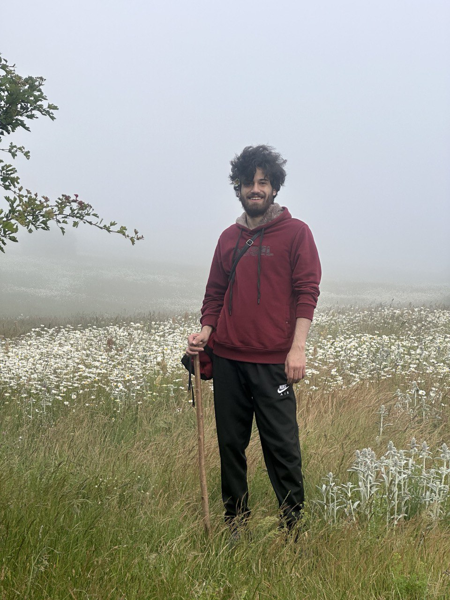

About Me
Since my childhood, I have had a strong inclination toward creating things, and this interest blossomed further upon delving into the realm of electronics. Recognizing my life's purpose of aiding others and aligning it with my passions, I embarked on my undergraduate journey in biomedical engineering (bioelectricity). Motivated by a desire to assist individuals, particularly those with special needs, I transitioned towards control systems for my master's studies, aiming to amplify my impact through robotics. Now, I am actively seeking a Ph.D. position that resonates with this overarching goal, leveraging the skills and interests nurtured since childhood.
From university to a realm of personal transformations, in the world of knowledge and exploration, in pursuit of growth and advancement. Join me, and witness the progress, experiences, and learnings that contribute to my personal development.